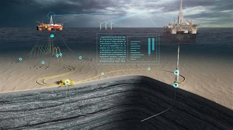
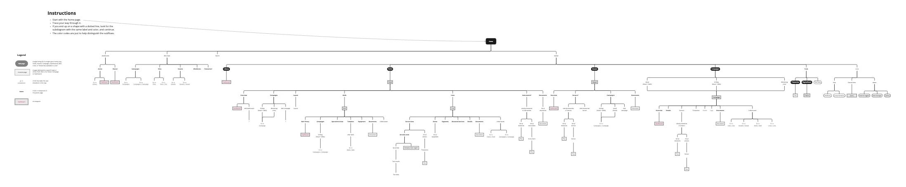
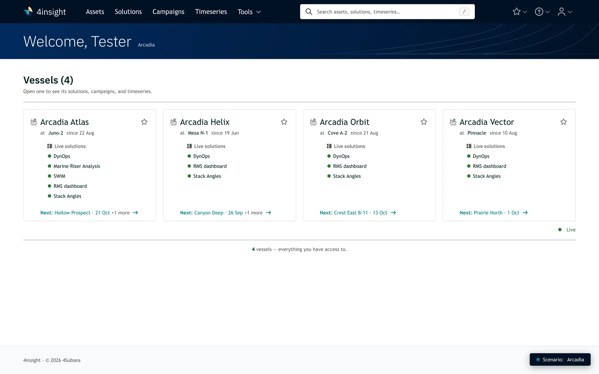
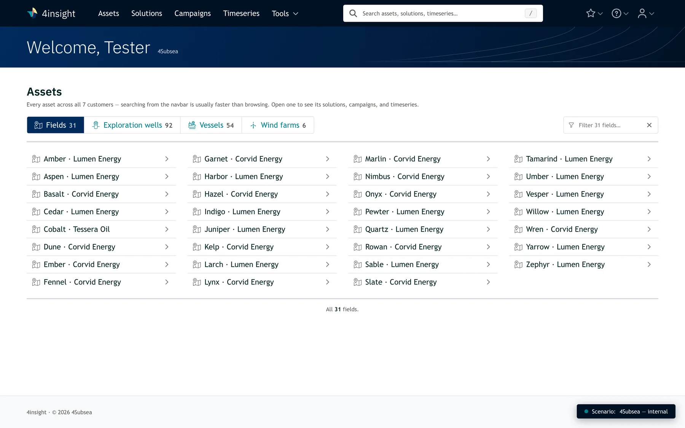
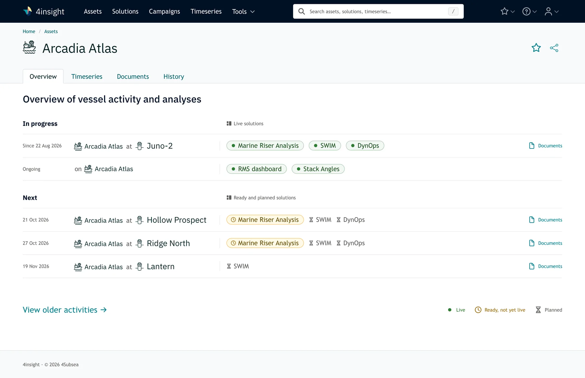
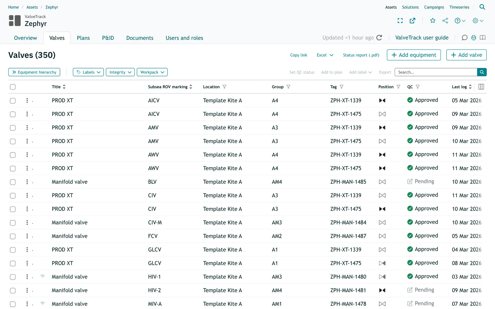
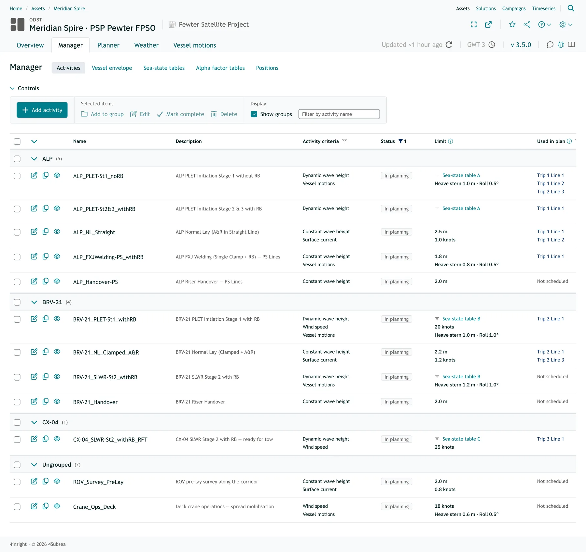
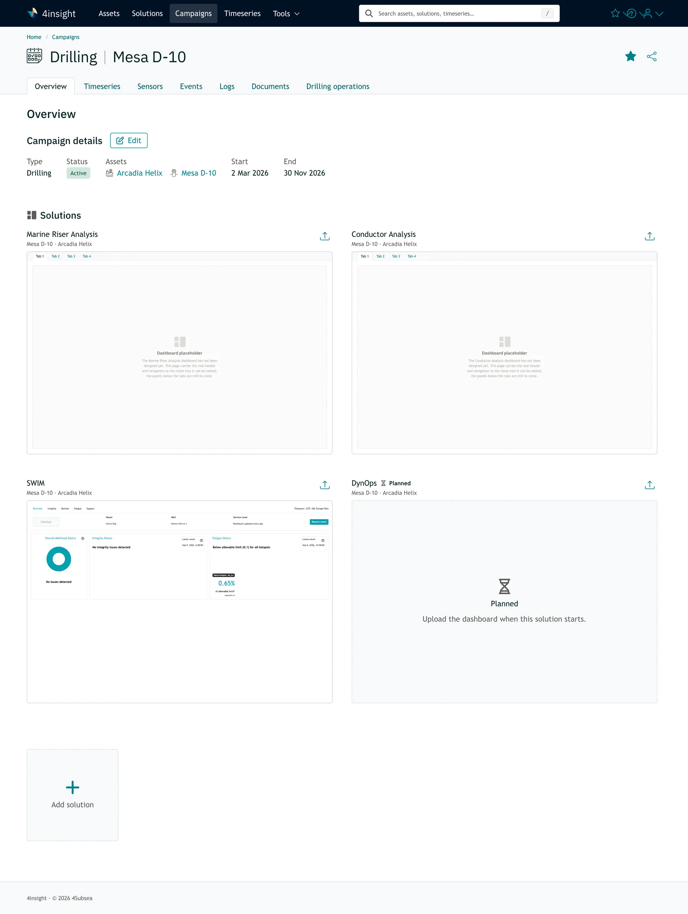

Insight Platform
This is a platform where clients can get insight on the state of their offshore assets via data and dashboards. Users range from ship personnel to engineers to management. Part of my time at 4Subsea.
- Problem The platform started out as an attempt to connect tools from across several different domains and users, so designs, patterns, terms, and navigation all varied.
- Role As the sole UX practitioner, I've shaped the tool from its engineer-designed beginnings through several rounds of iteration.
- Approach I adopted and refined the company's first design system, then led a platform-wide usability redesign. With little developer time to spare, I pushed it forward in small, negotiated steps.
- Outcome The platform is more consistent and coherent, usage is increasing, and user research efforts have increased across teams.
Read the full case study
Context
4Subsea develops monitoring and integrity-management software for the offshore energy industry — tools used by engineers responsible for assets in demanding, high-stakes environments. I have been the sole UX practitioner on the team, which means my responsibilities cover the full scope of UX: from individual component design to the overall structure and consistency of the platform. I have shaped the tool from its early engineer-designed beginnings through a number of iterations.
Challenge

The platform had grown product by product, without a unified design foundation to keep it consistent. The result was variation in interaction patterns, terminology, and navigation that created unnecessary friction for users. At the same time, the company was expanding its user base, which made addressing those inconsistencies more urgent.
Constraints
Working as a solo practitioner in an engineering-led organization means managing competing priorities. The users are experienced engineers with well-developed opinions about their tools, as well as limited availability for formal research sessions. Hence, research must be embedded into existing workflows rather than staged separately.
In addition, developer resources are extremely limited, and any time they devote to design implementation means less time they can spend on core functionality. So design must progress in small, spaced increments and through compromise.
What I Did






First steps
One of the early goals was to adopt and refine the company's first design system, bringing more consistency and an updated look across products. I then led an initial platform-level usability redesign focused on fixing some of the biggest usability issues with the platform.
Later steps
With the exception of localized page additions and redesigns, we maintained that overall design for several quarters while I focused on a more complete overhaul to address remaining issues, and dev returned to the backend. The refresh will be squeezed into and spread across several sprints the next couple of quarters.
AI
The design system and all page designs used to live in Figma, but both now reside in GitHub repos that I maintain. I converted them into HTML, CSS, and JavaScript files via Claude Code, worked for a couple of months to get everything looking as it should, constructed design.md and other guidance docs based on them, and now modify them and create new pages via iterations with Claude.
Compromise
It's worth emphasizing that every component on every page has been a compromise in design. Business objectives, user needs, consistency, and the need to minimize developer effort continually combine to dictate the result, with me judging when to push for high-priority items.
What I Learned
Compared to my other projects, the main learnings in this one were more on the team and organizational side than on the design one. When development resources are a severely limiting factor, UX becomes just as much a matter of communication and negotiation with your team, your stakeholders, and your leadership as it is of research and design.